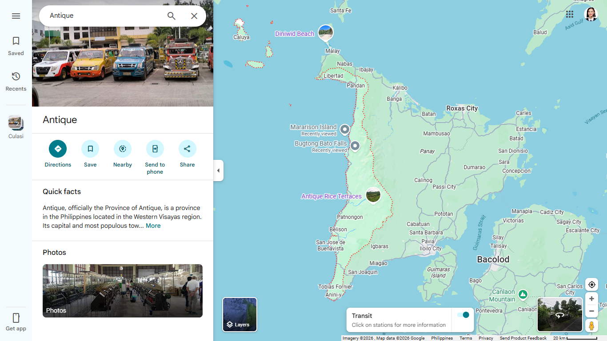

Travel Tips for Antique Province
🚗 Better plan ahead!
Planning your trip to Antique? A little preparation goes a long way in making your journey smooth, safe, and unforgettable. Whether you're exploring mountains, relaxing on beaches, or diving into local culture, these tips will help you travel smarter and better.
🌟 ESSENTIAL TRAVEL TIPS
7 things every visitor to Antique should know before they go.
🗓️
Tip 1 — Best Time to Visit
Visit between March and May for the best beach, island, and mountain weather. Avoid July–September when typhoons may affect travel. December is ideal for the Binirayan Festival.
🚐
Tip 2 — Transportation Options
Use jeepneys for inter-town travel, tricycles for short local hops, and motorbike rentals for maximum flexibility. Buses also connect Antique to Iloilo City for arrival/departure.
🛡️
Tip 3 — Safety Reminders
Always wear a life jacket on boats and during river tubing. Hire a licensed guide for mountain treks. Inform someone of your itinerary and never swim alone in rivers or open water.
💵
Tip 4 — Bring Enough Cash
ATMs are limited outside San Jose de Buenavista and Pandan. Most tourist spots, boats, guides, and local eateries only accept cash. Withdraw enough before heading to remote areas.
📅
Tip 5 — Book Activities in Advance
Popular activities like the Kawa Hot Bath, river tubing at Malumpati, and island boat trips fill up fast — especially on weekends and holidays. Reserve ahead to avoid disappointment.
🌿
Tip 6 — Respect Nature & Culture
Use reef-safe sunscreen near marine sanctuaries, bring a reusable bag and bottle, and carry out all waste in protected parks. Dress modestly when visiting heritage churches and sacred sites.
📱
Tip 7 — Connectivity & Preparation
Mobile signal is weak or nonexistent in mountains and remote islands. Download offline maps (e.g. Maps.Me or Google Maps offline) before you go. Bring a power bank for long excursions.
🗓️ BEST TIME TO VISIT
Knowing when to visit makes your Antique trip significantly more enjoyable.
💡 Insider Tip: Visit between March and May for the best combination of beach weather, clear mountain conditions, and manageable tourist crowds.
🛡️ SAFETY REMINDERS
Stay safe so every adventure in Antique is a happy one.
WHAT TO PACK
Antique’s tropical climate means warm weather all year round, so packing light—but smart—is key.
☀️ Essentials for Comfort
| 👕 | Lightweight, breathable clothes (cotton or linen) |
| 🩱 | Swimwear for beaches, rivers, and waterfalls |
| 🩴 | Flip-flops or sandals for casual walking |
🥾 Adventure Must-Haves
| 👟 | Comfortable hiking shoes or sandals with grip |
| 🎒 | Dry bag or waterproof pouch for gadgets |
| 👕 | Extra clothes for unexpected swims or rain |
🌞 Protection Items
| 🧴 | Sunscreen (reef-safe if possible) |
| 🧢 | Hat or cap and sunglasses |
| 🦟 | Insect repellent (especially for forest areas) |
💡 Insider Tip: Always bring a reusable water bottle—many areas are remote, and staying hydrated is essential.
GETTING AROUND
Transportation in Antique is simple but part of the adventure itself.

Local Transport Options
Travel Tips
💡 Insider Tip: Renting a motorbike gives you the freedom to explore less crowded beaches and hidden waterfalls at your own pace.